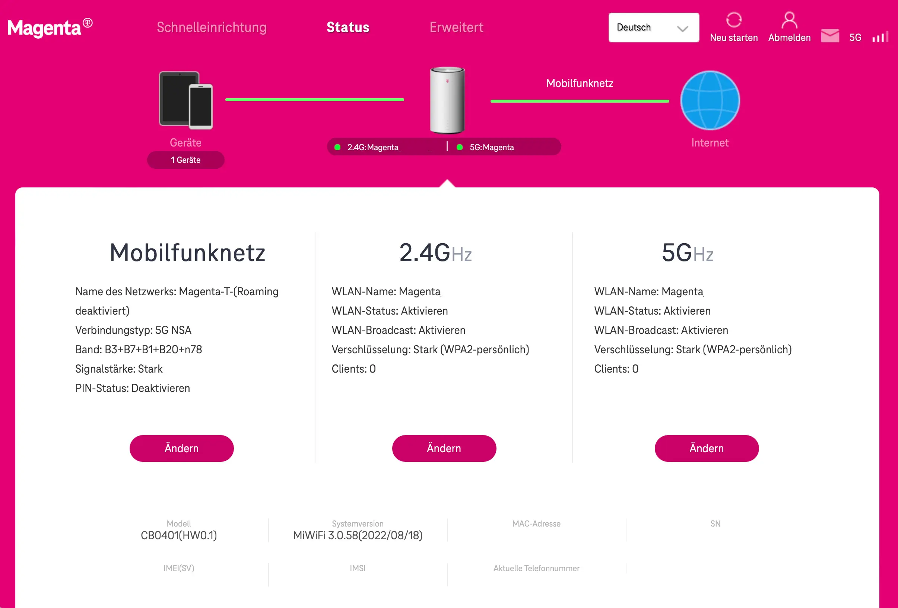

Hi wie kann man bei der 5G Box Outdoor die Frequenz mit die sie verbunden ist auslesen ?
LG
Also ob er mit n78 oder n28 verbunden ist sieht man das irgendwo ?
Hallo, für den ZTE Router gibt es ein Skript, wo du die Bänder siehst und auch ändern kannst. Ich bin mir aber nicht sicher ob das für deine Box auch geht.
Lg
Gerade eben schrieb Jim-:Hallo, für den ZTE Router gibt es ein Skript, wo du die Bänder siehst und auch ändern kannst. Ich bin mir aber nicht sicher ob das für deine Box auch geht.
Lg
Ich schätze aber du bist mit N78 verbunden.
Ich suche nämlich so etwas auch aber für Xaomi 5g Box.
vor 37 Minuten schrieb Jim-:Hallo, für den ZTE Router gibt es ein Skript, wo du die Bänder siehst und auch ändern kannst. Ich bin mir aber nicht sicher ob das für deine Box auch geht.
Lg
Ich schätze aber du bist mit N78 verbunden.
Hi, Ich bin mir nicht sicher ob es bei uns wirklich N78 gibt welche Bandbreiten sollten dann möglich sein ?
Kriege von meinen 500/100 er Platin Tarif und 500/50 5G 500 Internet Tarif ca. 350mbit down und 50 / 120 Upload
LG
vor einer Stunde schrieb Jim-:Ich suche nämlich so etwas auch aber für Xaomi 5g Box.
Hi vlt wirst du ja hier fündig:
https://www.lteforum.at/router/review/xiaomi-5g-cpe-pro-ax5400
Dort sieht man ein Bild wo man sieht Band: B3 + B7 + B20 + n78

LG
{kind=link}